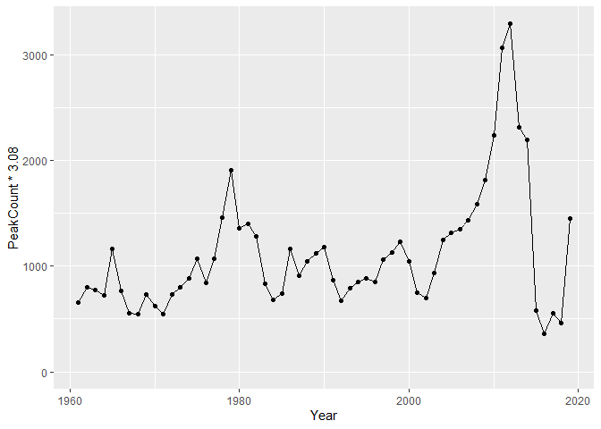

kootlake is an R package of annual Rainbow Trout, Bull Trout and Kokanee datasets for Kootenay Lake. The data is provided by the Ministry of Forests, Lands and Natural Resources Operations, British Columbia.
It provides a data set of individual fish length, weight, sex and fecundity information.
library(tibble)
library(kootlake)
kootlake::fish
#> # A tibble: 1,843 x 12
#> Year Month Day Species Length Weight Sex Fecundity Location SampleID
#> <dbl> <dbl> <dbl> <chr> <dbl> <dbl> <chr> <dbl> <chr> <dbl>
#> 1 1966 1 2 RB 580 2.8 <NA> NA <NA> 113
#> 2 1966 1 5 RB 650 3.6 <NA> NA <NA> 165
#> 3 1966 1 7 RB 420 0.8 <NA> NA <NA> 136
#> 4 1966 1 8 RB 600 3.1 <NA> NA <NA> 151
#> 5 1966 1 8 RB 630 3.6 <NA> NA <NA> 131
#> 6 1966 1 15 RB 710 4.6 <NA> NA <NA> 163
#> 7 1966 1 18 RB 737 6.4 <NA> NA <NA> 107
#> 8 1966 1 18 RB 620 3 <NA> NA <NA> 149
#> 9 1966 1 22 RB 500 1.7 <NA> NA <NA> 144
#> 10 1966 1 30 RB 680 5.2 <NA> NA <NA> 117
#> # … with 1,833 more rows, and 2 more variables: Source <chr>, Comment <chr>As well as data sets of annual counts for each species (bulltrout, kokanee and gerrard) and annual fishery and fishery_catch information from the Kootenay Lake Rainbow Trout mail out survey (KLRT).
Demonstration
library(ggplot2)
ggplot(data = kootlake::gerrard, aes(x = Year, y = PeakCount * 3.08)) +
geom_line() +
geom_point() +
expand_limits(y = 0)
Installation
To install the latest development version from GitHub
# install.packages("remotes")
remotes::install_github("poissonconsulting/kootlake")Code of Conduct
Please note that the kootlake project is released with a Contributor Code of Conduct. By contributing to this project, you agree to abide by its terms.
License
The data files are licensed under the Open Government Licence - British Columbia.
The code in this repository is licensed under the Apache License 2.0:
Copyright 2019 Province of British Columbia
Licensed under the Apache License, Version 2.0 (the "License");
you may not use this file except in compliance with the License.
You may obtain a copy of the License at
http://www.apache.org/licenses/LICENSE-2.0
Unless required by applicable law or agreed to in writing, software
distributed under the License is distributed on an "AS IS" BASIS,
WITHOUT WARRANTIES OR CONDITIONS OF ANY KIND, either express or implied.
See the License for the specific language governing permissions and
limitations under the License.